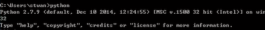
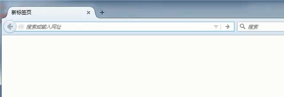
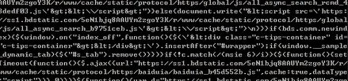
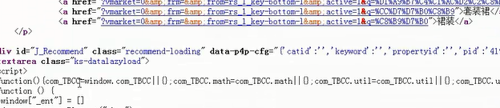

scrapy js的处理技巧
通过第三方工具执行js脚本
1、selenium
>>> from selenium import webdriver
>>> driver =webdriver.Firefox()
>>> driver.get('http://www.baidu.com')
driver.page_source
实际操作：
①进入：python

②输入上面的代码：
③执行完之后，会自动打开一个浏览器：

④通过代码操作浏览器，例如，此时我们要打开百度：
⑤执行之后，可以看到百度已经打开：
⑥再次查看driver.page_source，可以看到这个网页经过浏览器执行之后的源代码：

手动模拟js的执行
1、通过火狐浏览器监控页面链接
火狐浏览器，如果安装了firebug工具，直接按F12，就可以看到调试面板：
然后点击“网络”，选择“保持”，再点击“全部”，然后再刷新刚才的页面，可以清楚的看到，产生页面的过程中，有很多子链接进行了内容提供，如图所示：

这是监控网页链接的一种方法。
2、通过js代码获取必要的信息
①输入关键字，网页跳出来的推荐的产品，但是这些产品在源代码中并不会显示出来，取而代之的是一些JS脚本，例如：

②在刚才跟踪的链接里边，肯定有一个是js产生的链接，需要手动寻找：
在调试选项中，点击Javascript，会列出相应的内容；
③查看并分析js代码如何产生链接
总结
1，知道可以调用第三方工具执行js代码；
2，学会通过火狐浏览器监控页面链接；
3，学会模拟js的执行；
【本文由麦子学院独家原创，转载请注明出处并保留原文链接】